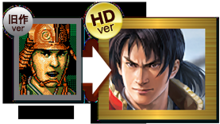
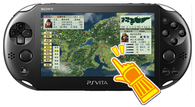

<!-- h2>%(tshd)sで更新される項目</h2>

<ul class="checklist">
<li>
    <h3><span class="positive">最新武将グラフィック</span>を採用！</h3>
    <p>1300人の武将グラフィックが最新のものに変更されます。<br>
     HD版のベースとなった旧PC版では<span class="negative">汎用顔(=モンタージュ)の武将もありました</span>が、<br>
            本作では<span class="positive">全武将固有の顔</span>が用意されます。<br>
    <span class="img_seperator"></span>
    <span class="img_seperator"></span>
    </p>
<li>
    <h3><span class="positive">戦略画面のマップやUIのグラフィック</span>を一新！</h3>
    <ul class="pointlist">
    <li><h4>日本全土マップのグラフィックを一新し、美しく生まれ変わる。</h4>
        <span class="memo">城の位置や道の連結、全ての地域関係や地域名などは%(ts95)sと同じ模様です。</span>
        <p><span class="img_seperator"></span>
        </p>
    <li><h4>UIを最適化</h4>
        <p>PS Vita、現行のPCにあわせて、ユーザーインターフェイスを最適化！<br>
                                操作性や視認性が大幅に向上したことで、ストレスのないプレイが可能になっているそうです。<br>
                                また、PS Vita版は、タッチ機能やトロフィー機能にも対応し、<br>
                                手ごたえ十分のさまざまな課題を乗り越え、コンプリートする達成感を味わえます。<br></p>
        <p></p>
    </ul>
<li>
    <h3><span class="positive">戦争画面のマップのグラフィックを</span>一新！</h3>
    <p>野戦マップや籠城戦マップのグラフィックも一新されます。<br>
    <ul class="pointlist">
    <li><h4>野戦マップ</h4>
        <span class="memo">野戦マップの構成は、%(ts95)sと同じ模様です。</span>
        <p><span class="img_seperator"></span>
        <br></p>
    <li><h4>籠城戦マップ</h4>
        <span class="memo">籠城戦マップの構成は、%(ts95)sと同じ模様です。</span>
        <p><span class="img_seperator"></span>
        <br></p>
    </ul>

<li>
     <h3><span class="positive">各種コマンドやイベントシーンのグラフィック</span>を一新！</h3>
     <p>各種コマンドやイベントシーンのグラフィックも一新されます。</p>
    <ul class="pointlist">
    <li><h4>教育コマンド</h4>
        <p><span class="img_seperator"></span>
        <br>
        <span class="img_seperator"></span>
        <br>
        </p>
    <li><h4>評定コマンド</h4>
        <p><br>
    </ul>
</ul>
<h2>%(tshd)sと%(ts95)sで同じと<span class="negative">思われる</span>項目</h2>
<ul class="checklist">
     <li>
         <h3><span class="positive">基本的なゲームシステム</span></h3>
         <p>%(tshd)sの基本的なゲームシステムは95版に準拠する模様です。</p>
     <li>
         <h3><span class="positive">６本のシナリオ</span></h3>
         <blockquote>鉄砲が伝来する以前の時代を描く「1534年 信長の誕生」から、<br>秀吉死後の時代を舞台にした「1599年 関ヶ原前夜」まで6本のシナリオを搭載。</blockquote>
         <p>との公式発表より、%(ts95)sと同じシナリオ名の模様です。<br>
                        おそらくは、各シナリオの内容も95版に準拠するでしょう。<br></p>
         <span class="memo">%(ts95)sのシナリオ</span>
         <table class="coder">
            <tr>
                <th width="200">シナリオ名</th>
                <th width="200">開始年</th>
            </tr>
            <tr>
                <td>信長の誕生</td>
                <td>（１５３４年）</td>
            </tr>
            <tr>
                <td>信長元服</td>
                <td>（１５４６年）</td>
            </tr>
            <tr>
                <td>桶狭間の合戦</td>
                <td>（１５６０年）</td>
            </tr>
            <tr>
                <td>信長包囲網</td>
                <td>（１５７１年）</td>
            </tr>
            <tr>
                <td>本能寺の変</td>
                <td>（１５８２年）</td>
            </tr>
            <tr>
                <td>関ヶ原前夜</td>
                <td>（１５９９年）</td>
            </tr>
        </table>

     <li>
         <h3><span class="positive">メッセージ等</span></h3>
         <p>露出している内容や、公式サイトの内容から鑑みて、<br>
                     各種セリフ・戦国名物事典(武将列伝)・戦国名城物語(城列伝)等は、95版と同一の模様です。</p>
     <li>
        <h3><span class="positive">総武将人数1300人</span></h3>
        <p>1300人という武将の人数は95版と同一ですので、人物・内容ともに同一の模様です。</p>
     <li>
        <h3><span class="positive">城数</span></h3>
        <p>公式発表及び、露出済みの日本全土マップから、95版と同一の城数・同じ経路連結です。</p>
     <li>
        <h3><span class="positive">野戦・籠城戦</span></h3>
        <p>グラフィックの見た目は変化しますが、ヘックスの構成(マップの中身)は95版と同一の模様です。</p>
     <li>
        <h3><span class="positive">ＢＧＭは95版のオーケストラ</span></h3>
        <blockquote>おなじみ菅野よう子作曲のBGMがワルシャワ・フィルの演奏で鳴り響く！</blockquote>
        <p>との公式発表により、95版と同一の模様です。<br></p>
     <li>
        <h3><span class="positive">編集機能</span></h3>
        <p>95版同様に、パワーアップキットの各種データ編集機能が搭載されます。<br>
                   顔エディタについては仕様が不透明ですが、ユーザー独自の顔グラの利用機能が<br>
                   何らかの形で提供されると思われます。</p>
</ul>
<h2>特典・追加配信等</h2>
<ul class="checklist">
     <li><h3><span class="positive">早期購入者特典</span></h3>
     <p><span class="positive">有名武将 追加顔ＣＧ（60点セット）</span>が配信されます。<br>
     発売日(2015年11月12日)から一ヶ月間、期間限定で無料配信(※)となります。<br><span class="negative">(※以降は有料配信)</span><br>
</ul>
<h2>Windows版の動作環境</h2>
<ul class="checklist">
    <li><h3>販売時期でのスペック目安</h3>
    <ul>
    <li><span class="positive">デスクトップPCならば、2008年前半ぐらいに10万前後</span>だったもの。
    <li><span class="positive">ノートや、ラップトップの場合は、2009年後半ぐらいに10万前後</span>だったもの。
    </ul>
    <li><h3><a href="http://www.gamecity.ne.jp/tenshouki/hd/info.html">公式サイト</a>の詳細スペック目安</h3>
    <table class="coder tbl_v_bgcolor">
        <tr>
            <td>CPU</td>
            <td>【最低】Pentium4 1GHz以上<br>
            【推奨】Core2 Duo 2GHz以上<br>
            CPUはSSE2(ストリーム SIMD 拡張機能 2)に対応している必要があります</td>
        </tr>
        <tr>
            <td>OS</td>
            <td>Vista/7/8/8.1/10 日本語版</td>
        </tr>
        <tr>
            <td>メモリ</td>
            <td>32bitOSの場合は1GB以上<br>
                64bitOSの場合は2GB以上</td>
        </tr>
        <tr>
            <td>ハードディスク</td>
            <td>1.2GB以上</td>
        </tr>
        <tr>
            <td>DVD-ROMドライブ</td>
            <td>ダウンロード版では必要ありません</td>
        </tr>
        <tr>
            <td>ディスプレイ</td>
            <td>1024×768 ピクセル以上または1280×720ピクセル以上表示可能なディスプレイ</td>
        </tr>
        <tr>
            <td>ビデオカード</td>
            <td>DirectX9.0cに完全対応したものシェーダーモデル3.0必須<br>
                                     【最低】VRAM 128MB以上<br>
                                    【推奨】VRAM 512MB以上<br>
            </td>
        </tr>
        <tr>
            <td>サウンドカード</td>
            <td>効果音・ＢＧＭをお楽しみいただくには、Windowsがサポートしている<br>
            &lt;16bitステレオ48KHzWAVE形式&gt;が再生可能なサウンドカードが必要です</td>
        </tr>
        <tr>
            <td>ネットワーク環境</td>
            <td>ネットワーク接続環境必須</td>
        </tr>
    </table>

    <fieldset class="alert alert-warning"><legend>補足事項</legend>
※エミュレーションソフト・仮想ドライブ・SCSI ドライブでは正常に動作しません。<br>
※Macintoshでの動作は保証対象外となります。<br>
</fieldset>

</ul-->
